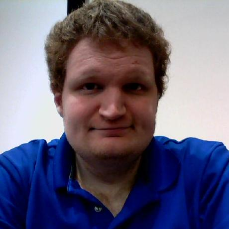

Derrick Greenspan's Website

I am Derrick Greenspan, a PhD Candidate in Computer Science, and a member of the ARPERS lab
at the University of Central Florida.
I graduated from UCF in Fall 2016 with a Bachelor's in Computer Science, and in Spring 2019 with a Master's in Computer Science.
My work focuses on persistent memory (PM) support in Operating Systems and compilers.
My advisors are Dr. Mark Heinrich and
Dr. Yan Solihin.
Publications
- 2019 - LLAMA -- An LLVM Pass and Library for Automatically Determining Memory Allocations (Paper, Bibtex) -- The International Symposium on Memory Systems, 2019 (MEMSYS 2019)
- 2022 - Improving the Security and Programmability of Persistent Memory Objects (Paper, Bibtex, Presentation and Slides) -- 2022 IEEE International Symposium on Secure and Private Execution Environment Design (SEED 2022)
- 2023 - A brief primer on Persistent Memory Objects (Extended Abstract, Poster) -- 14th Annual Non-Volatile Memories Workshop (NVMW 2023)